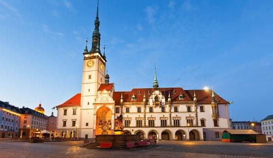
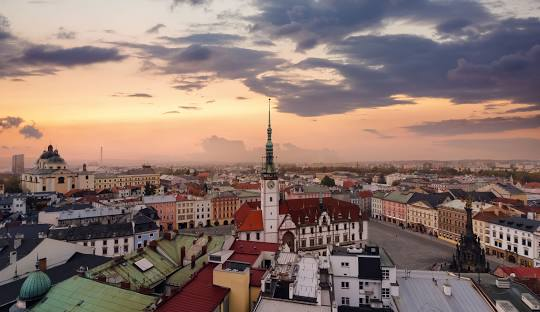

Olomouc, krajské město olomouckého kraji, počitájicí přes 100 tis. obyvatel.
Srdce Moravy a historický klenot, skrývá v sobě bohaté dědictví, které zasahuje hluboko do českých dějin.
Jeho architektonická krása a kulturní bohatství přitahují návštěvníky z celého světa.

Architektura Olomouce je jako živý průvodce historií, jejíž každý oblouk a každý detail vypráví příběh minulých generací.
Od gotických klenotů, jako je slavný Svatý Kopeček, přes renesanční perly až po barokní skvosty, město zanechalo nesmazatelnou stopu v evropském architektonickém dědictví.
Dnes, moderní architektura prolíná se s historickými památkami a vytváři unikátní spojení minulosti a současnosti.
Olomouc má před sebou nejen úkol chránit a restaurovat své historické poklady, ale také vytvářet nové architektonické díla, která budou inspirovat a obohacovat život místních obyvatel i návštěvníků.
